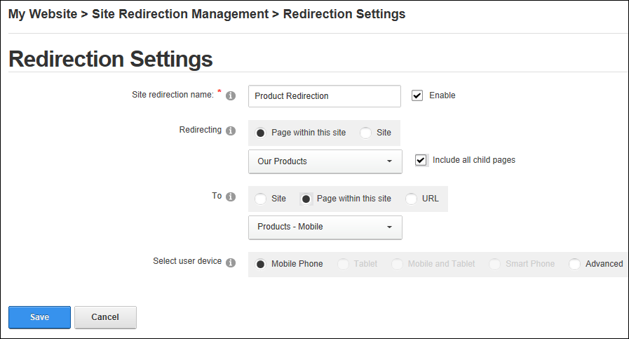
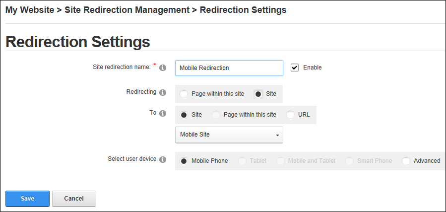

Adding Advanced Site Redirections
How to create advanced redirection paths for a site. Advanced options include the ability to create a redirection that only applies to a page and its child pages or a redirection that applies to a full site. Redirections can be associated with one or more types of user devices or a set of rules can be applied to further limit a redirection.
- Navigate to Admin > Advanced Settings >
 Site Redirection Management.
Site Redirection Management.
- Select the Create a redirection using advanced options option.
- Click the Create button.
- In the Site Redirection Name text box, enter a name for this redirection. This redirection is automatically enabled, however if you wish to disable it you can at Enable.
- At Redirecting, select from these options:
- Page within this site: Choose this option to redirect users from a site page:
- Select the page name from the drop down list. The current Home page of the site is selected by default.
- Optional. at Include all child pages if you wish apply this redirection to all of the child pages.
- At To, select the location you want to redirect uses to from these options:
- Site: Select to redirect users to another site within this installation and then select the site from the drop down list.
- Page within this site: Select to redirect users to another page with this site and then select the page name from the drop down list.
- URL: Select to redirect users to an external URL and then enter the redirection URL into the URL text box.
- Site: Select to create a redirection for the entire site.
- Select the site name from the drop down list.
- At To, select the location you want to redirect uses to from these options:
- Site: Select to redirect users to another site within this installation and then select the site from the drop down list.
- URL: Select to redirect users to an external URL and then enter the redirection URL into the URL text box.
- At Select User Device, choose the device for this redirection from these option:
- Mobile Phone: Redirects mobile phone users. This is the default option.
- Tablet: Redirects tablet users. This option on available for premium data users.
- Both: Redirects users of both mobile phones and tablets. This option on available for premium data users.
- Advanced: Select to create multiple rules for this redirection:
- At Capability, select a condition for this rule from the drop down list.
- At Matching Value, select the matching value for this rule.
- Click the Add
 button to add this rule
button to add this rule - Repeat the above 3 steps to add additional rules.
- Click the Save button. The newly created redirection is now listed.
The above image shows a redirection which redirects all users who browse the Products page of the site (including any of its child page) to another page of the site called "Products - Mobile".

In another example the below image shows a redirection which redirects all mobile phone users to another site within this DNN installation. This redirection applies to all site pages.
